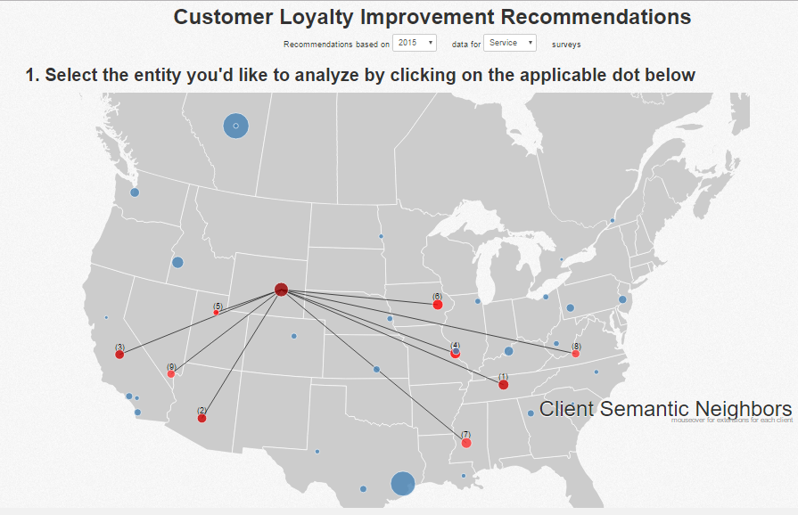
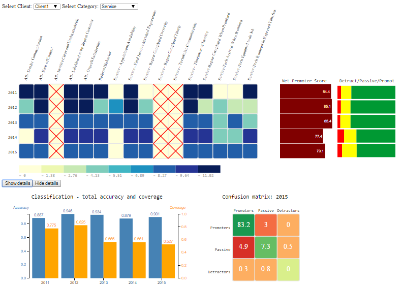
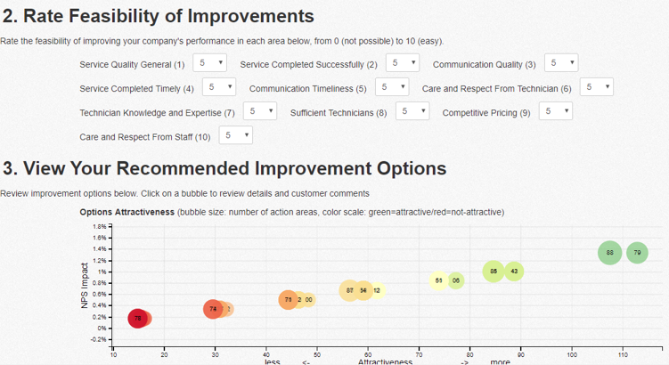
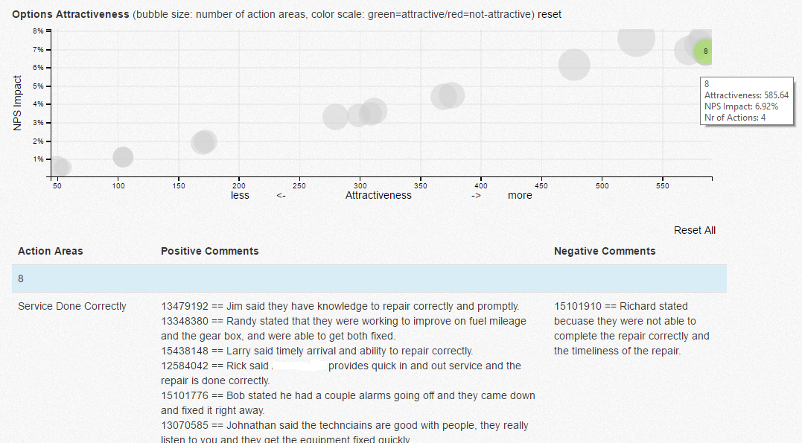

CLIRS project
CLIRS: Customer loyalty improvement recommender system (demo*)
 The system was developed at the KDD lab of UNC-Charlotte for The Daniel Group consulting. The system supports business consultants in identifying areas of the repair service that are predicted to improve the customer satisfaction, as measured by Net Promoter Score (NPS). The system implements data visualization techniques, clustering, action rules, and text mining to generate quantifiable recommendations for business improvement. A Springer's Big Data book describes the approach to build the system, together with a detailed description of all the data mining and performance improvement experiments. A shorter paper describing the system is available at User Friendly NPS-Based Recommender System for Driving Business Revenue, presented at IJCRS'17 conference and poster, presented at WIML '17 conference. Visualization techniques implemented in the system are described in a book chapter, titled Visual Analysis of Relevant Features in Customer Loyalty Improvement Recommendation. You can access recommendation system web-based demo here and visualizations for data analysis here. Make sure to have JavaScript enabled in your browser to be able to display correctly.
CLIRS2: sentiment mining-based recommender system
 The second version of CLIRS was developed after the business changed the collected data on customer feedback on services to free text format of customer surveys. CLIRS2 proposes a novel technique for building a recommender system solely from unstructured data (text comments). It implements the concepts of sentiment mining, meta actions and action rules to generate quantifiable recommendations for service improvement with the goal of maximizing the company's revenue and customer base. Sentiment analysis on customer data is a journal paper that describes the sentiment mining/NLP-based method, and a chapter Recommender System based on unstructured data presents approach to build RS from unstructured (text) data.
* Make sure to enable JavaScript in your browser settings